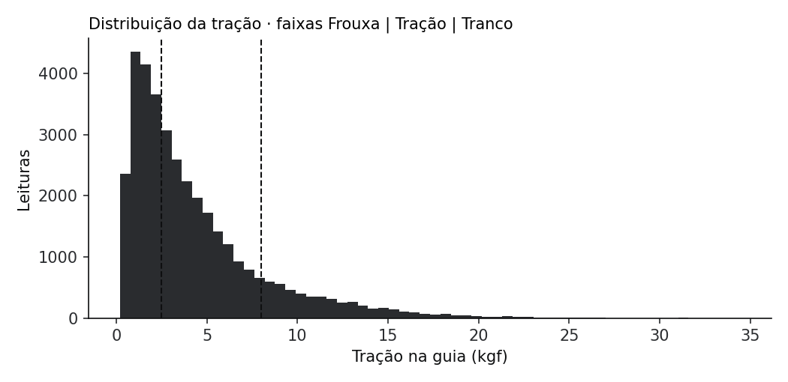
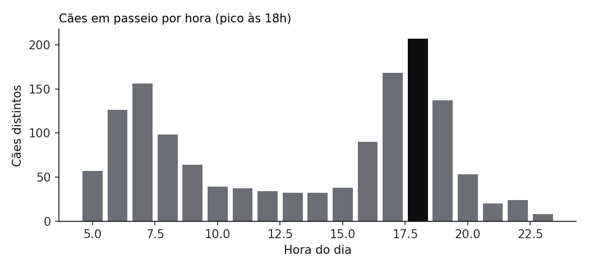
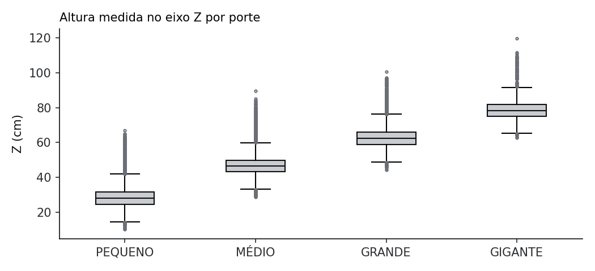
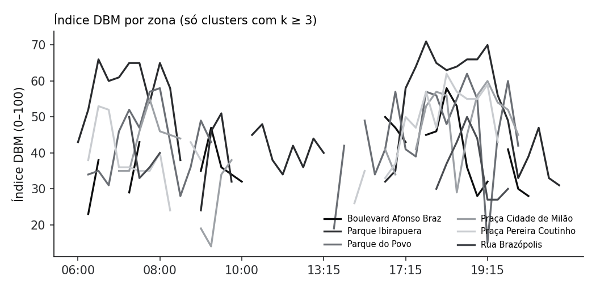
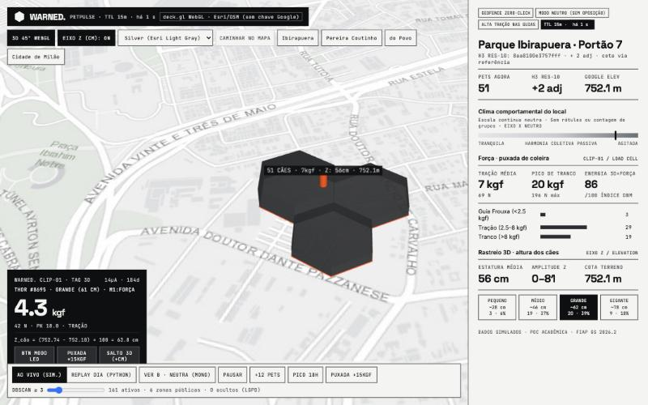
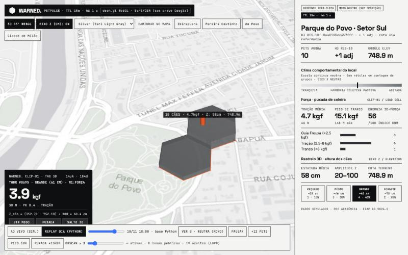
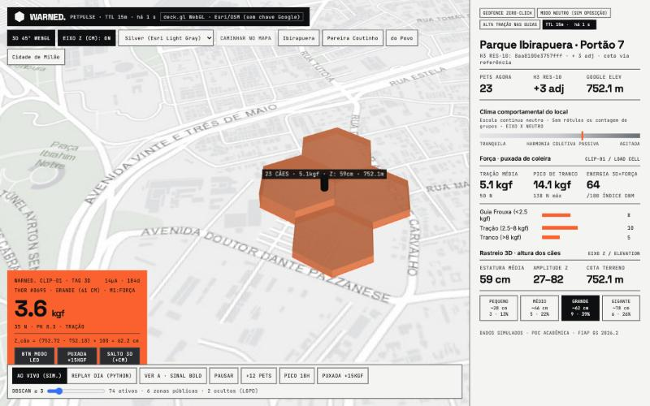

Desafio CitizenTech: tecnologia centrada no cidadão. ODS 11.7 e ODS 3.
+12 PETS, PICO 18H, PUXADA +15KGF, SALTO 3D, perfil THOR #8695) são dados simulados por um gerador com semente fixa. Os locais e coordenadas são reais (São Paulo: Ibirapuera, Vila Nova Conceição e Itaim). As cotas de terreno são valores de referência, ou vêm da Google Elevation API quando há chave. O firmware foi compilado para ESP32, mas não foi testado em hardware físico em campo. Os valores de autonomia (14 µA / 184 dias) são meta de projeto, não medição.São Paulo tem uma das maiores populações de cães domiciliados do país, e parques, praças e cachorródromos recebem centenas deles por dia, com concentração no fim da tarde. Três dores aparecem no cotidiano:
Os apps atuais dependem de check-ins e relatos manuais, que são raros, atrasados e subjetivos.
| PÚBLICO | BENEFÍCIO |
|---|---|
| Tutores urbanos (incluindo idosos e pessoas com mobilidade reduzida) | Leitura objetiva antes do passeio: lotação, tração média e picos por zona e horário. |
| Frequentadores dos parques (pedestres, corredores, crianças) | Menos conflitos e trancos em horários e locais críticos. |
| Poder público e gestores de parques | Mapa agregado e anônimo de uso por hexágono H3 e faixa horária, para dimensionar cachorródromos e manutenção. |
| Clínicas veterinárias, adestradores e pet shops | Dados agregados de porte, intensidade e horários de pico. |
Construir uma prova de conceito demonstrável que, sem nenhum check-in manual, transforme sinais físicos de um sensor de coleira (força e altura) em informação agregada, anônima e útil sobre o uso dos espaços públicos, respondendo à pergunta do desafio com IA (agrupamento DBSCAN), dados, IoT e visualização espacial.
| ATOR | PAPEL | COMO AMPLIA O IMPACTO |
|---|---|---|
| Tutor + CLIP-01 | Gera telemetria passiva (geofence zero-click) | Cada novo tutor melhora a densidade e a precisão do mapa (efeito de rede). |
| Prefeitura / Secretaria do Verde | Consome painéis agregados por H3 | Pode replicar o modelo em outros parques e integrar com o portal de dados abertos. |
| Administração dos parques | Ajusta limpeza, iluminação e sinalização | Usa os picos (por exemplo, às 18h) para alocar equipes. |
| Clínicas e ONGs de bem-estar animal | Campanhas de adestramento "guia frouxa" | Medem a redução de trancos antes e depois das campanhas. |
| Varejo pet (pet hubs) | Parceiros na distribuição do hardware | Reduzem o custo de aquisição do CLIP-01 para o tutor. |
CLIP-01 (ESP32) Celular do tutor Backend (Python) App web (JS) HX711 força (kgf) BLE GPS lat/lng HTTPS simulate → SQLite → janela TTL 15m Google Maps vetorial MPU6050 inclinação ───▶ + leitura do clip ───▶ H3 res-10 → DBSCAN (haversine 45 m) + WebGLOverlayView (deck.gl) Barômetro → Z (cm) (geofence passivo) k-anonymity (k ≥ N) → Índice DBM ───▶ hexágonos 3D, eixo Z, Botão LED cache Google Elevation por H3 painel neutro, replay
Nesta POC, o elo "celular do tutor" é substituído pelo gerador de telemetria simulada (Python e JS), e o firmware roda de forma independente no simulador Wokwi.
| DADO | ORIGEM | TRATAMENTO | LIMITAÇÃO |
|---|---|---|---|
| Zonas e coordenadas | Reais (6 locais de SP) | Indexação H3 res-10 | Recorte pequeno (Ibirapuera, Itaim, Vila Nova Conceição) |
| Cota do terreno | Referência compatível com a Google Elevation; a API real é usada se houver chave | Cache por célula H3 no SQLite e interpolação IDW como fallback | A resolução da Elevation API é de metros, e o eixo Z depende de diferença em centímetros |
| Cães (600) | Simulados: porte, altura, sexo, peso | Altura de referência por porte (28/46/62/78 cm) ± ruído | Distribuição de portes estimada, não censitária |
| Telemetria (36.038 leituras) | Simulada, a cada 30 s, com picos às 7h e 18h | Faixas de guia, kgf→N, ruído barométrico de ±5 cm, trancos e saltos eventuais | Não substitui a calibração com hardware real |
Qualidade: 0 valores nulos. As medianas de Z por porte ficaram em 28,1 / 46,5 / 62,4 / 78,3 cm, coerentes com as alturas de referência. O gerador usa semente fixa, então é reprodutível (há teste automatizado para isso).
| TECNOLOGIA | POR QUE |
|---|---|
| Python · pandas · scikit-learn | Linguagem do curso. DBSCAN com métrica haversine e ε em metros. |
| Uber H3 res-10 | Células de ~66 m de aresta (tamanho de um cachorródromo); vizinhança uniforme (k-ring); chave de cache. |
| SQLite | Relacional, sem servidor, reprodutível pelo avaliador; CHECK constraints e índice (h3, ts). |
| Google Maps JS + WebGLOverlayView (deck.gl GoogleMapsOverlay) | Mapa 3D vetorial com camadas WebGL intercaladas; Elevation API para a cota. |
| deck.gl standalone + tiles Esri/OSM | Fallback sem chave: as mesmas camadas, para a demo nunca depender de cobrança. |
| ESP32 · HX711 · MPU6050 (C++/Arduino) | Hardware de baixo custo visto no curso; simulável no Wokwi. |
| Claude Design | Identidade visual "VER B · Neutra monocromática" aplicada ao app e a este documento. |
| Assistente de IA (Claude, Anthropic) | Projeto desenvolvido com apoio de assistente de IA na escrita de código, documentação e identidade visual. As decisões de escopo, a revisão e os testes foram feitos pelo integrante. |
| CONTEÚDO | IMPLEMENTAÇÃO |
|---|---|
| Análise exploratória de dados | petpulse/eda.py, notebooks/petpulse_eda.ipynb, 4 gráficos e tabela-resumo |
| Machine Learning: agrupamento | DBSCAN + análise de sensibilidade de ε (notebook) |
| Visualização interativa e espacial | App 3D com H3, eixo Z, replay do dia e controles de simulação |
| Banco de dados | Modelo relacional com 4 tabelas, consultas por janela TTL e cache geoespacial |
| Sensores e ESP32 | Firmware CLIP-01 com JSON na Serial (BLE no produto) |
| Cibersegurança e LGPD | k-anonymity, TTL de 15 min, ocultação de isolados, chave fora do Git, testes de não exposição |
| Nuvem e APIs | Google Maps Platform (Maps JS, Elevation) com cache para reduzir custo |
src/petpulse/physics.py)def z_cao_cm(elev_sensor_m, google_elev_m, offset_montagem_cm=0.0, inclinacao_graus=0.0):
"""Z_cão = (Elevação_Sensor − GoogleElev(lat,lng)) × 100, em cm."""
z = (elev_sensor_m - google_elev_m) * 100.0
z = z * math.cos(math.radians(inclinacao_graus)) + offset_montagem_cm
return round(z, 1)
def indice_dbm(n_caes, tracao_media_kgf, amplitude_z_cm, ref_max=40 * 18 * 1.0):
"""Índice DBM (Densidade·Biomecânica·Movimento), 0–100. NÃO é o dBm de RF."""
if n_caes <= 0:
return 0
intensidade = n_caes * max(tracao_media_kgf, 0) * max(amplitude_z_cm, 0) / 100.0
valor = 100 * math.log10(1 + intensidade) / math.log10(1 + ref_max)
return int(round(min(max(valor, 0), 100)))
Sobre o nome DBM: em telecom, dBm é decibel-miliwatt, 10·log10(P/1 mW). No PetPulse, DBM é uma métrica própria da POC, inspirada na lógica do decibel: comprime em escala logarítmica a intensidade I = cães × tração × amplitude vertical, para que um parque lotado não sature a régua e esconda diferenças entre zonas médias. Dobrar I não dobra o índice, e há teste automatizado para isso.
src/petpulse/clustering.py)def dbscan(caes, eps_m=DBSCAN_EPS_M, k_min=K_MIN):
coords = np.radians(caes[["lat", "lng"]].to_numpy())
model = DBSCAN(eps=eps_m / R_TERRA_M, min_samples=k_min,
metric="haversine", algorithm="ball_tree")
return model.fit_predict(coords) # -1 = isolado
def agrega_clusters(caes, rotulos, cota_fn, k_min=K_MIN):
caes = caes.assign(cluster=rotulos)
ocultos = int((caes["cluster"] == -1).sum())
for cid, grupo in caes[caes["cluster"] >= 0].groupby("cluster"):
if grupo["dog_id"].nunique() < k_min: # LGPD OCULTO
ocultos += len(grupo); continue
... # só estatísticas agregadas saem daqui: nunca dog_id
src/petpulse/elevation.py)def cota(conn, lat, lng):
cell = h3.latlng_to_cell(lat, lng, H3_RES)
row = conn.execute("SELECT elev_m, fonte FROM h3_elevation WHERE h3=?", (cell,)).fetchone()
if row: # cache: zero chamadas repetidas
return cell, row[0], row[1]
key = os.environ.get("GOOGLE_MAPS_API_KEY")
elev = _google(*h3.cell_to_latlng(cell), key) if key else None
if elev is None:
elev, fonte = _interpolada(*h3.cell_to_latlng(cell)), "referencia"
conn.execute("INSERT OR REPLACE INTO h3_elevation VALUES (?,?,?)", (cell, elev, fonte))
src/petpulse/db.py)dog(dog_id PK, nome, porte CHECK(...), altura_cm, sexo, peso_kg)
telemetry(id PK, ts, dog_id FK→dog, zona, lat, lng, h3, kgf, newton,
faixa CHECK IN ('FROUXA','TRACAO','TRANCO'), elev_sensor_m, z_cm) INDEX (h3, ts)
h3_elevation(h3 PK, elev_m, fonte)
cluster_snapshot(janela_ini, cluster_id, zona, h3, n_caes, tracao_media, pico_kgf,
z_medio_cm, z_min_cm, z_max_cm, cota_m, dbm) PK (janela_ini, cluster_id)
src/firmware/clip01/clip01.ino, trecho)float kgf = balanca.is_ready() ? fabsf(balanca.get_units(3)) : 0;
pico = fmaxf(pico * 0.995f, kgf);
// Z_cão = (Elevação_sensor − GoogleElev(lat,lng)) × 100, projetado na vertical pela IMU
float z = (lerElevacaoSensor() - GOOGLE_ELEV) * 100.0f * cosf(inclinacaoGraus() * PI / 180.0f);
Serial.printf("{\"dog\":%d,\"kgf\":%.1f,\"n\":%d,\"faixa\":\"%s\",\"z_cm\":%.1f,...}\n", ...);
No Wokwi, um potenciômetro substitui o barômetro (o simulador não tem BMP280). Um filtro exponencial (EMA, α = 0,2) reduz o ruído barométrico.
dog_id sai do módulo de clusterização (teste test_cluster_publico_nao_expoe_ids).DBSCAN ≥ N controla clusterização e privacidade ao mesmo tempo.config.js/variável de ambiente, ignorados pelo Git. Recomenda-se restringir a chave por domínio (HTTP referrer).$ python -m pytest -v tests test_kgf_para_newton_igual_a_ui[3.4-33 | 13.6-133 | 18.3-179] PASSED x3 test_faixas_de_guia[1.0 | 2.5 | 8.0 | 8.1] PASSED x4 test_eixo_z_formula PASSED test_filtro_barometrico_reduz_ruido PASSED test_porte_por_altura[27 | 47 | 61 | 80] PASSED x4 test_dbm_logaritmico_monotono_e_limitado PASSED test_dbscan_agrupa_vizinhos_e_isola_distante PASSED test_k_anonymity_oculta_isolados_e_grupos_pequenos PASSED test_cluster_publico_nao_expoe_ids PASSED test_cache_h3_de_elevacao PASSED test_schema_rejeita_faixa_invalida PASSED test_simulacao_reprodutivel_e_com_pico_18h PASSED ======================== 20 passed in 1.95s ======================== $ node src/web/test-core.mjs # paridade JS ↔ Python (mesmo DBM = 73 para 13 cães/13,6 kgf/70 cm) core JS: todos os testes passaram $ arduino-cli compile --fqbn esp32:esp32:esp32 src/firmware/clip01 Sketch uses 315604 bytes (24%) of program storage space. Global variables use 23804 bytes (7%) of dynamic memory.
Testes manuais no navegador: navegação entre zonas, seleção de hexágono, PICO 18H, PUXADA +15KGF, SALTO 3D, modo LED, VER A/B, slider k e replay do dia. Todos funcionaram no motor deck.gl (sem chave). O motor Google foi implementado, mas não foi exercitado nesta entrega por falta de chave de API.
600 cães · 36.038 leituras · 65 janelas de 15 min (6h–22h) · 184 clusters públicos com k ≥ 3. Faixas de guia: 40,6% frouxa, 45,2% tração, 14,2% tranco. Pico de demanda: 18h.
| ZONA | JANELAS | CÃES MÁX | TRAÇÃO MÉD (kgf) | PICO (kgf) | DBM MÁX | COTA (m) |
|---|---|---|---|---|---|---|
| Parque Ibirapuera · Portão 7 | 45 | 29 | 4,6 | 26,1 | 71 | 752,1 |
| Parque do Povo · Setor Sul | 38 | 16 | 4,2 | 29,6 | 62 | 748,9 |
| Praça Pereira Coutinho | 34 | 16 | 4,5 | 25,0 | 62 | 762,6 |
| Praça Cidade de Milão | 28 | 14 | 4,9 | 34,4 | 60 | 756,3 |
| Boulevard Afonso Braz | 23 | 11 | 4,1 | 25,5 | 58 | 768,4 |
| Rua Brazópolis · V. N. Conceição | 16 | 9 | 4,0 | 31,9 | 50 | 763,3 |




| ε (m) | CLUSTERS | ISOLADOS OCULTOS | LEITURA |
|---|---|---|---|
| 20 | 6 | 66 | fragmenta demais e oculta 75% dos cães |
| 30 | 7 | 49 | ainda oculta mais da metade |
| 45 | 8 | 19 | escolhido: separa sub-áreas sem fundir parques |
| 60 | 6 | 6 | começa a fundir grupos vizinhos |
| 90 | 6 | 0 | funde tudo; nenhum isolado fica protegido |



| ODS / META | CONTRIBUIÇÃO |
|---|---|
| ODS 11.7: acesso universal a espaços públicos seguros, inclusivos e acessíveis | Dados agregados de uso real por hexágono e horário para planejar cachorródromos, limpeza, iluminação e sinalização; tutores evitam horários críticos. |
| ODS 3: saúde e bem-estar (3.4 bem-estar; 3.6 prevenção de lesões) | Redução de quedas por trancos (feedback ao tutor e campanhas de "guia frouxa") e incentivo à atividade física regular de tutores e cães. |
| ODS 11.3: urbanização inclusiva e planejamento participativo | Participação passiva do cidadão na geração de dados para a gestão pública. |
| INDICADOR | COMO MEDIR | META (PILOTO 6 MESES) |
|---|---|---|
| % de leituras na faixa "tranco" (> 8 kgf) | Telemetria agregada por zona, antes e depois das campanhas | −20% |
| Quedas e mordidas reportadas nos parques | Registros da administração dos parques e da UBS/SAMU da região | Redução observável |
| Zonas H3 ativas acima de k (cobertura útil) | Contagem de células públicas por hora | ≥ 30 células no polo Ibirapuera |
| Horários de pico atendidos pela gestão | Ações de limpeza e iluminação alinhadas ao pico detectado | 2 ajustes de escala por parque |
| Passeios em horário menos lotado | Mudança na distribuição horária dos usuários do app | +15% fora do pico |
| Privacidade | Auditoria: 0 publicações com cluster < k ou com identificador | 0 incidentes |
O PetPulse mostra que é possível transformar sinais físicos simples (força na guia e altura medida por barômetro, ancorada na cota do terreno) em informação urbana útil e anônima, sem pedir nenhuma ação manual ao cidadão. A combinação H3 + DBSCAN + k-anonymity resolveu, com um único parâmetro, dois problemas: encontrar onde os cães se concentram e garantir que nenhum indivíduo seja exposto. A POC entrega um pipeline reprodutível com 20 testes automatizados, um app 3D interativo com replay do dia, firmware ESP32 compilável e uma identidade visual coerente.
Próximos passos: (1) protótipo físico do CLIP-01 com calibração da célula de carga e do barômetro; (2) piloto com 30 a 50 tutores no polo Ibirapuera; (3) API pública de dados agregados para a prefeitura; (4) validação do Índice DBM contra observação em campo; (5) migração do banco para PostgreSQL/PostGIS em nuvem.
| ITEM | LINK |
|---|---|
Repositório GitHub (público; fiap-tutoria como colaboradora) | https://github.com/Qreuzebek/petpulse-gs |
| Vídeo demonstrativo (YouTube, não listado, até 5 min) | https://youtu.be/l8rQs4pqZ_E |
| Pasta do projeto no repositório | 1TIAO/GLOBAL-SOLUTION-2/ |